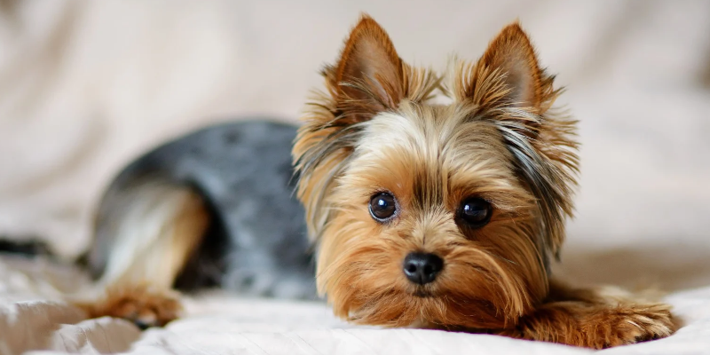
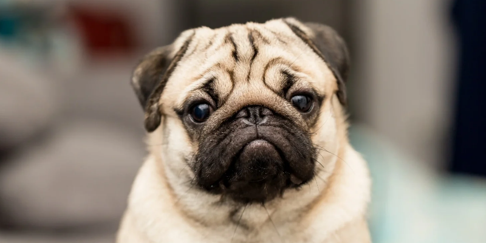
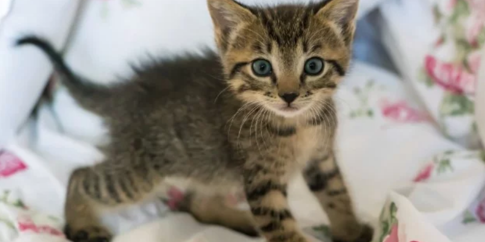
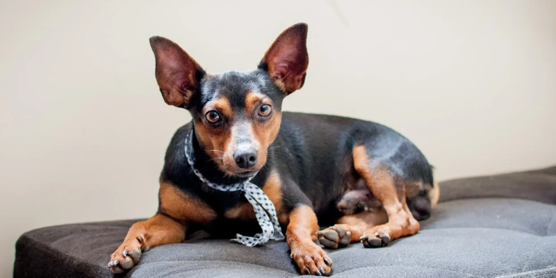

LUKE
Gatinho meigo e manhoso. Gosta de carinho para dormir e
se dá super bem com outros gatos.

LUNA
Doguinha muito linda. Gosta de brincar com crianças , agitada e carinhosa.
2 anos
BOLINHA
Arisco, ás vezes teimoso, mas com um grande coração.
Só dorme com seu ursinho Loy.

POMPOM
Atrapalhada, faz suas maguncinhas e traz muita alegria aonde passa.
5 meses
TOBY
Curioso, sempre atento e muito estiloso. Adora correr.
1 anos